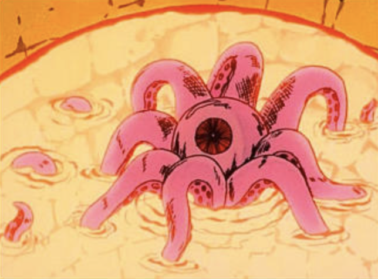

##### # ## /
###### / /#### # #/ #
/# / / / ### # ### ## ### #
/ / / /## ## # ## # ##
/ / / ## ## ## ##
## ## / ## ### /### ######## ### /### ## /## ### /### ### /### ########
## ## / ## ###/ #### / ######## ### / ### / ## / ### ###/ #### / ### / #### / ########
/### ## / ## ## ###/ ## ## / ###/ ##/ ### ## ###/ ## ## ###/ ##
/ ### ## / ## ## ## ## ## ## ## ## ## ## #### ##
## ## /######## ## ## ## ## ## ## ## ## ## ### ##
## ## ## / ## ## ## ## ## ## ## ## ## ## ### ##
### # / # ## ## ## ## ## ## ## ## ## ## ### ##
### / /#### ## ## ## ## ## ### / ## ## ## ## /### ## ##
#####/ / #### ## / ### ### ## ### / ######/ ## ## ### ### / / #### / ##
### c / ## #/ ### ### ## ##/ ##### ## ## ### ##/ ###/ ##
o # /
m ## /
m /
a /
House of Destro
or
Goodnight, My Baroness
To know ourselves
we must be broken down
into our requisite parts
To be ourselves
we must be broken down together
A process that does not come easily, even to the assassins of high culture.
It is none but James McCullen Destro XXIII of the Scottish Highlands, Laird
of the House of Destro, leader of the Iron Grenadiers and founder of M.A.R.S.
Industries, who hides beneath the still mirror waters of the reflecting pool.
It is he, oh Gallowglass of the
Baroness... the buyer and seller of dreams.
And I. . .
... I am a Narc.
—---------------------------------------------------------------------------
Cold turns the water white. Past the flickering kitchen light of
the carriage house, I hear - but do not see - Abraham the Eagle.
The gulls drop clam shells beneath cloud puff. I hear rocks clap,
see the clam guts. In certain circles, it's nothing short of murder.
As Foucault said: who of us is blameless?
—----------------------------------------------------------------------------
Ref# :: The Mask ::
Forged of beryllium1 steel. Not purposed to conceal disfigurement but to
weaponize humiliation. To shift the weight of defeat into an infinite fount
of revenge - a permanent self-underdog-ing and dissolution of "sides",
a reframing/undermining of the very concept of both honour and servitude.
War of Three Kingdoms → Banishment → Mask → Unscrupulous Sale of Armaments
Like the hot pink squid-like cyclops in his Scottish castle's catacomb2,
I too have secrets stemming from my blemished bloodline - some chthonic!

My Baroness,
From this side of the glass I peer into you. Not you but a you
reconstituted. You as plasma. Neutrino you. A
synthnoid of
Nostalghia4. Mine eyes trace the fleshed edges of collar bone,
once beaded. Once raised up and held there. I hear the song
and it swallows me whole. It is the tongue of the Serpentor.
The hair of the Dreadnoks. The tractor beam of the
Crüe. . .
In the end, she chose to destroy it all: my fortress and all its contents.
Burning chrome & shattered moss.
Ancestral ramparts strewn like laundry. My mask, now forever tightened...
[...I'd do it all again tomorrow]
Call me your animal. Call me your T-1000. Live inside my mind, [bit] Baroness…
I will obey!
1Resulting from the bombardment of nuclei with cosmic rays. See also: poison
dust.
2Must be conjured annually on the Longest Night3.
3Winter Solstice.
4CUT TO: Night City.
Shades
down apartment. Orange spark. Deep breath. Exhale.
"With the burning of this ritual flame I briefly rekindle the shattered world."